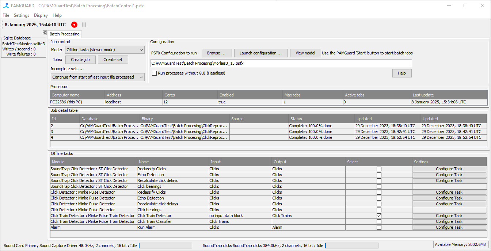
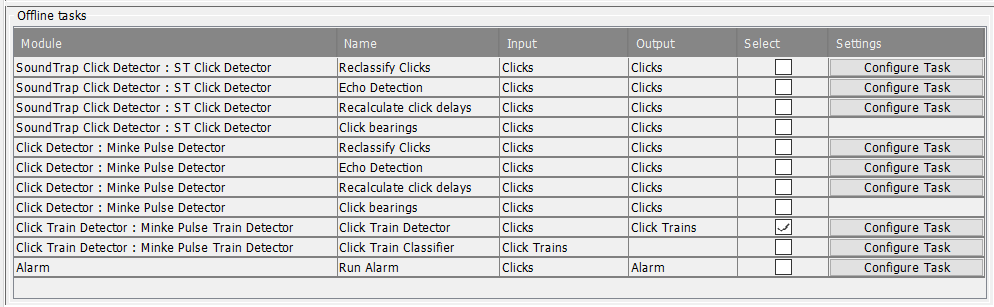

Configure Offline Tasks
Whether you are planning to run jobs in Normal Mode to process raw data, or whether you plan to use Viewer Mode to run tasks on processed data, the Batch Processor module always runs in Normal Mode.
To configure the batch processor, start PAMGuard in normal mode with a new / blank configuration and add two modules: a database and the batch processor module.
No other modules should be added to the configuration, except perhaps a User Input module which would allow you to make notes about what you’ve been doing with the batch processor.
On no account should you add any Sound Processing, or Detection, Classification, or Localisation modules.
Select Operation Mode
In the top left “Job Control” panel select “Offline tasks (viewer mode)” from the drop-down menu. When you change this selection you’ll notice that the display panels below change slightly reflecting the different available options for the offlie tasks operation mode.
Once you’ve selected a psfx file that contains offline tasks and setup some jobs, the display should now look something like the image below.

Viewer Task Configuration
Configuring offline tasks, such as re-running click classification, for Viewer mode is a bit more complicated than for the normal mode data processing. This is because each Viewer database already contains a copy of the configuration and the multiple databases and accompanying binary data may all have different configurations.
To address this, as with the normal mode processing, you’ll use a psfx file to hold a master configuration for the tasks you want to run. As each task runs, the batch processor will check the configuration in the dataset about to be processed and will do its best to ensure that the configuration for the dataset is compatible with the task to run.
The most common thing to do, is to work with one of your datasets in Viewer mode to get tasks set up in the way that you want them, then extract the configuration from that viewer database into a psfx file to use with the batch processor. See below to see how to make additional changes to tasks from within the batch processor display.
Don’t worry about which folder of sound files, database, and binary store are set in the configuration. These will all be overwritten with new values for each job when it runs.
Before it starts a job, PAMGuard will:
- If the PAMGuard module required for the task is not present, the module will be added to each datasets configuration.
- The configuration settings for that module will all be copied over from the psfx configuration irrespective of whether the module was already present, or if it was just added.
- The configuration of other modules in each dataset will not be altered.
If the configurations differ considerably, there is no guarantee that the offline tasks will run correctly. For example if you were starting with two similar configurations, both of which had a click detector, but one was called “Click Detector” and the other configuration had called it “HF Click Detector” you’ll not be able to use the same batch job configuration.
Extracting an existing Viewer configuration into a psfx file
It’s possible that you have some PAMGuard datasets, each consisting of a database and a folder of binary data, but no longer have the psfx file used to generate those datasets. There are three ways in which you can quite easily recreate the psfx file to use with the batch processor:
- Look in the folders of binary data. Each time PAMGuard starts it copies the psfx configuration into the first binary folder it generates. So the binary folders should contain an exact copy of the configuration used to generate that dataset.
- Open one of your datasets in Viewer Mode, then from the file menu select the option Export Configuration … and save the configuration somewhere on your system.
- Generate your list of jobs you’re going to run the tasks on, right click on any of the jobs in the “Job Detail table” and select the menu item Extract Configuration from database … which will allow you to save the configuration in psfx format.
Adding new modules
Offline tasks can have entirely new modules added and will process their offline tasks so long as the module would not normally work on raw input data. For instance, if you added a new Click Detector at this stage, nothing will happen because the click detector expects to process raw data. Your could however add a Click Train Detector to an existing configuration and it will search existing click detector output for click trains. Next time you open the datasets you processed with the additional detector you’ll find it’s added to the configuration and that the database has tables of detected click trains.
Tasks list
A list of available tasks will automatically be extracted from the master psfx file and displayed in the Offline tasks table in the lower half of the display. The list will reflect tasks available in the configuration you’re working with. In this example the configuration has two click detectors, each of which has four standard tasks (click classification, echo detection, delay calculation, and bearing calculation). A Click Train Detector module, which has two offline tasks for detection and classification, is connected to the output of the Minke Pulse Detector and an Alarm module to the output of the SoundTrap Click Detector. The task panel therefore contains a total of 11 different tasks.

For each task, the table shows the PAMGuard module running the tasks, the name of the task, the input to the task and which data are modified by the task. There is also a column where you select which tasks you want to run (it probably won’t be all of them) and a button for editing settings if they are available.
Changing task settings
There are two ways of changing the task settings.
- Open the psfx file from the Configuration panel and change the settings there. Again remember to save the configuration or the changes will not get used.
- On the Offline tasks table, click on the button to the right of each task “Configure Task” and the settings for that task should show in a popup dialog. Once the dialog is closed, the settings will be applied to all jobs (apart from any already running).